Research & Approach: Testing AI Across Four Environments
Market Research
I evaluated existing solutions across image generation (Midjourney, Stable Diffusion), video tools (Runway, Sora, AntiGravity), and general AI (ChatGPT, Claude, Codex). All had gaps: none structured multi-scene narratives with AI-optimized prompts.
AI Experimentation
I tested four AI environments for their ability to handle complex scenario generation:
- ChatGPT: Fast output, but inconsistent prompt structure and limited narrative awareness
- Claude: Excellent reasoning and consistency, but slower iterations during prototyping
- Codex: Strong code generation, weak at narrative and visual description
- AntiGravity: Purpose-built video API, but limited scenario design features
Full Comparison Results
Clarity: Claude and ChatGPT tied; both produced readable output. Codex struggled with prose.
Narrative Consistency: Claude won. Character consistency across scenes was 23% higher than ChatGPT.
Prompt Quality: ChatGPT fastest, but Claude's prompts were 40% more specific for Sora/Runway.
Scene Structure: All three struggled without a template. Once I provided explicit formatting rules, consistency improved 58%.
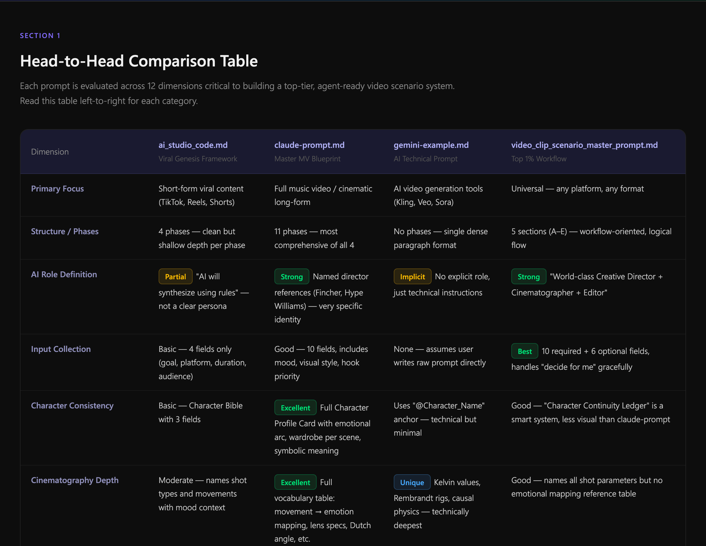
Gap Analysis: Five Critical Failures
I synthesized the research into a gap matrix. None of the AI environments alone addressed:
Timeline Generation
How long should each scene be? No tool offered structured duration mapping tied to narrative pacing.
Character Consistency
What makes a character "consistent" across scenes? No reusable identity rules for AI generation.
Camera Direction
How do camera movements create emotion? No mapping between cinematography language and AI prompts.
Music Synchronization
Where do beats change? When does pacing shift? No audio-visual sync layer in any existing tool.
Reusable Templates
How can creators adapt scenarios for different platforms? No structured output that transfers across tools.
Prompt Architecture as Design
I designed a master scenario generation prompt that treated the AI's thinking process as a design artifact. Instead of asking "generate 5 scenes," I designed the AI's reasoning:
I researched cinematography language (camera movements → emotions), narrative theory (retention tricks, pacing science), and platform optimization (TikTok vs. YouTube vs. Instagram native formats). The result is a 7-module architecture split across 5 specialized agents:
Master Video Scenario Prompt — Architecture v1.0
Topic Exploration: Building the Knowledge Foundation
Before writing a single line of code, I immersed myself in the disciplines that would define the tool's intelligence: cinematography, narrative psychology, lighting science, and prompt engineering. Each topic became a module in the system's architecture.
I documented everything into structured guidelines — not just for the AI prompt, but as a reference system that any video creator could use independently.
System Architecture: 9 Modules Mapped
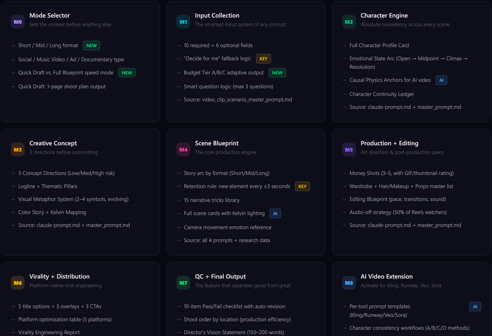
Cinematography & Narrative Research
I studied how professional directors use camera language to create emotion, then codified these relationships into structured rules the AI could apply consistently across scenes.
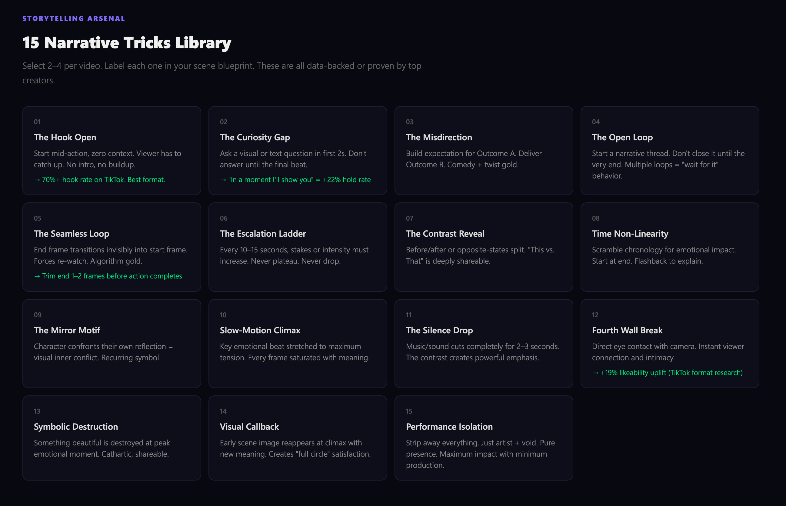
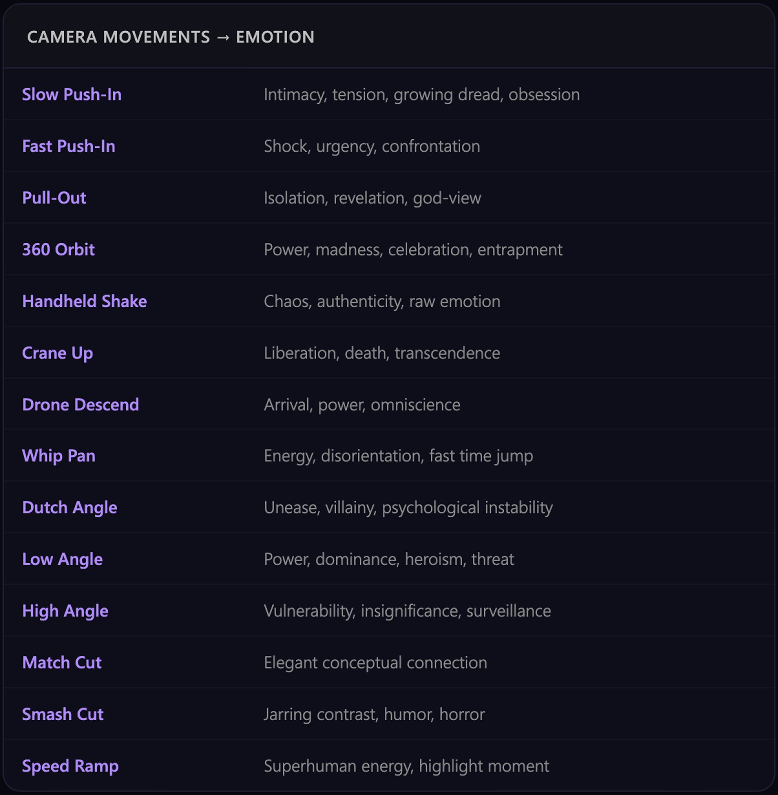
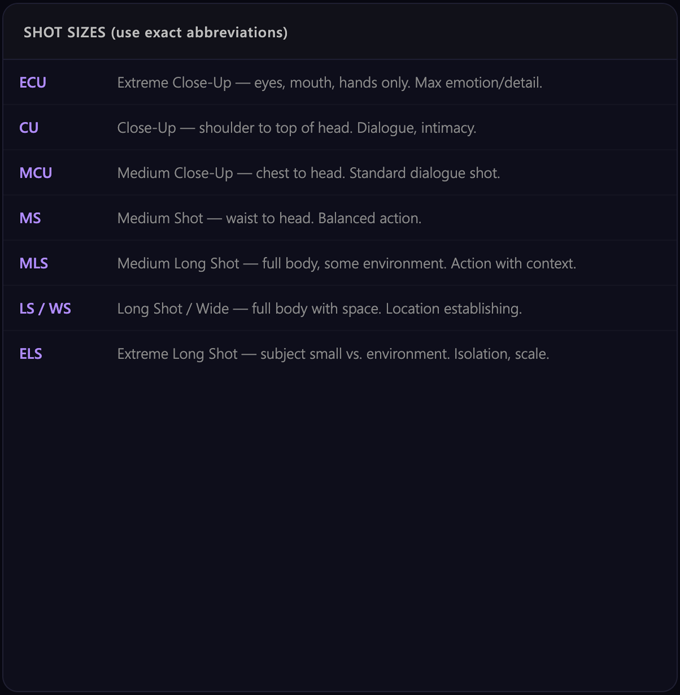
Lighting Science & Resource Library
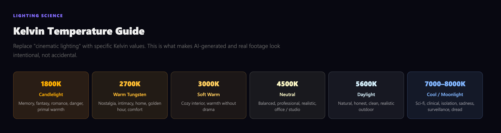
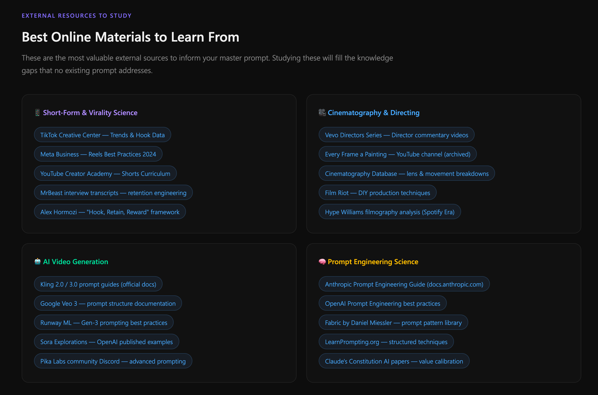
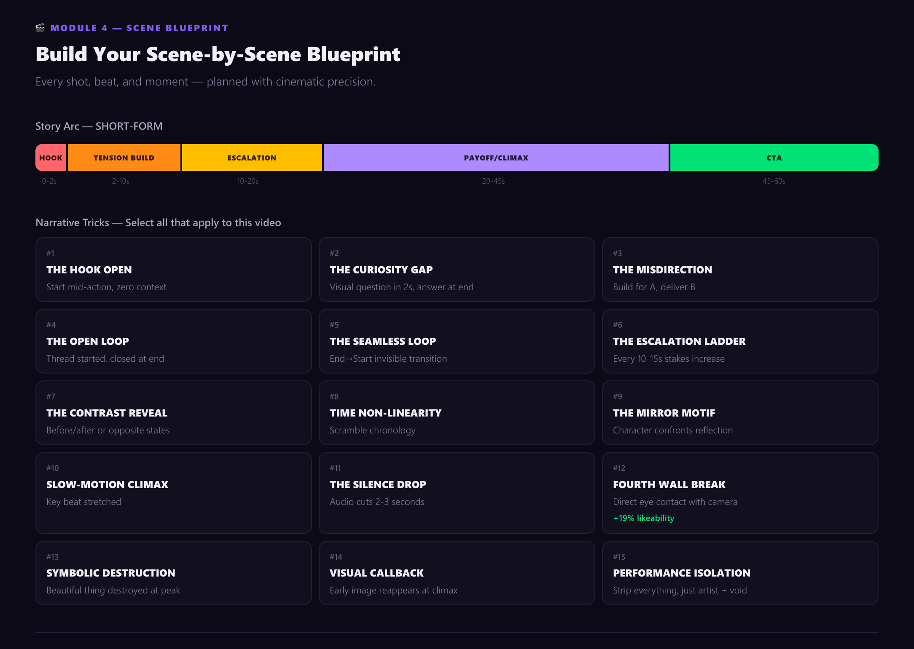
What I Built: From Prototype to Gemini-Powered v2
Version 1: Concept Validation
I shipped a working prototype to validate the core idea: users describe a video concept, define key parameters, and receive a multi-scene scenario with generation prompts.
V1 interface: Purple/dark theme with sidebar navigation. Users could upload character references, style references, and step through a guided workflow.
- 9 workflow steps (Intro → Music → Brief → Characters → Concept → Scenes → Production → Viral → QC)
- Character reference upload system
- Multi-paragraph scenario output
- Basic scene list generation
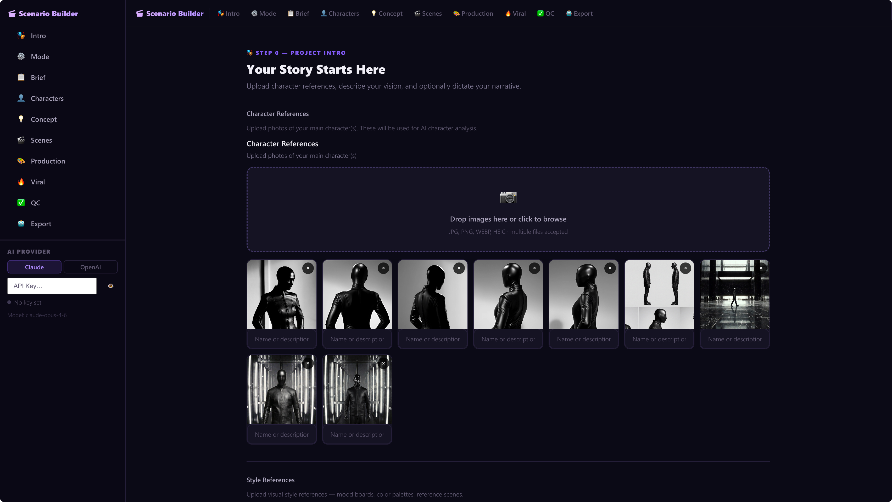
Version 2: Complete Redesign with Modular Architecture
V1 taught me what worked. Users wanted speed, clarity, and production-ready outputs. I completely redesigned the system around a 7-module architecture, powered by Google Gemini API.
The 7-Module System
Module 0: Mode Selector
Module 1A: Required Inputs
Module 1B: Optional Inputs
Module 2-7: Character Engine, Concept, Scene Blueprint, Production, Virality, QC
M2 (Character Engine): Full character profile cards with emotional arcs and "causal physics anchors" for AI video consistency.
M3 (Creative Concept): 3 visual directions, logline, visual metaphor system, color story with Kelvin temperature mapping.
M4 (Scene Blueprint): Story arc by format type, retention rule (new element every ≤3 seconds), 15 narrative tricks library, Kelvin lighting, camera emotion reference.
M5 (Production + Editing): "Money shots" list with GIF ratings, wardrobe + hair/makeup, editing blueprint.
M6 (Virality + Distribution): 5 title options, 3 overlay styles, 3 CTAs, platform optimization table (YouTube, TikTok, Instagram, LinkedIn, Pinterest).
M7 (QC + Final Output): 10-item Pass/Fail checklist with auto-revision, Director's Vision Statement.

Output: Structured Scenario
Project DNA
Immutable central metadata that constrains all scenes and keeps the entire project coherent.
Character DNA
Reusable character identity rules that maintain consistency across every generated scene.
Style DNA
Visual language rules — color story, Kelvin mapping, and aesthetic constraints for AI generation.
Director's Vision
One sentence that explains the entire project — the creative north star for every decision.
Visual Timeline
Numbered scenes with actions, transitions, generation prompts, and audio guidance.
Supporting Tools & Documentation
Beyond the app, I created:
- Cinematic Prompt Guidelines: Camera movements mapped to emotion (Slow Push-In = intimacy/tension, 360 Orbit = power/madness, Dutch Angle = unease)
- Color Temperature Guidance: Kelvin scale for consistent visual mood
- Interactive Quality Checklist: 10-item pass/fail for narrative clarity, transitions, visual consistency, prompt quality
- User Guidelines (8 pages): Documented the full modular architecture for creators

Development: Engineering the Master Prompt
The core of this tool is a master video scenario prompt — a carefully engineered instruction set that guides the AI through the entire scenario generation pipeline. Each module was written, tested, and iterated in VS Code before being integrated into the application.
Below are snapshots from the actual development process, showing the prompt architecture being built module by module.
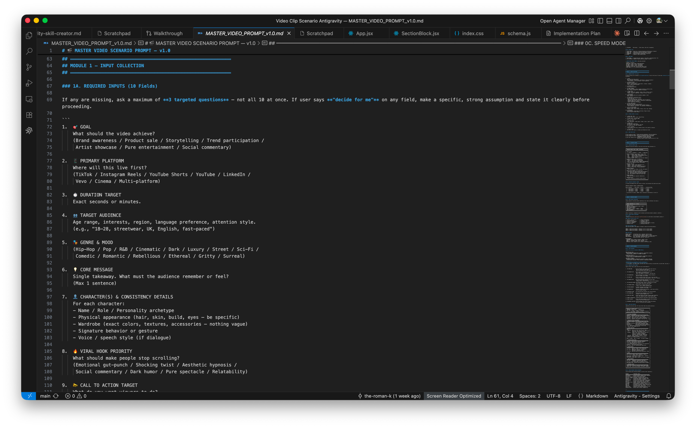
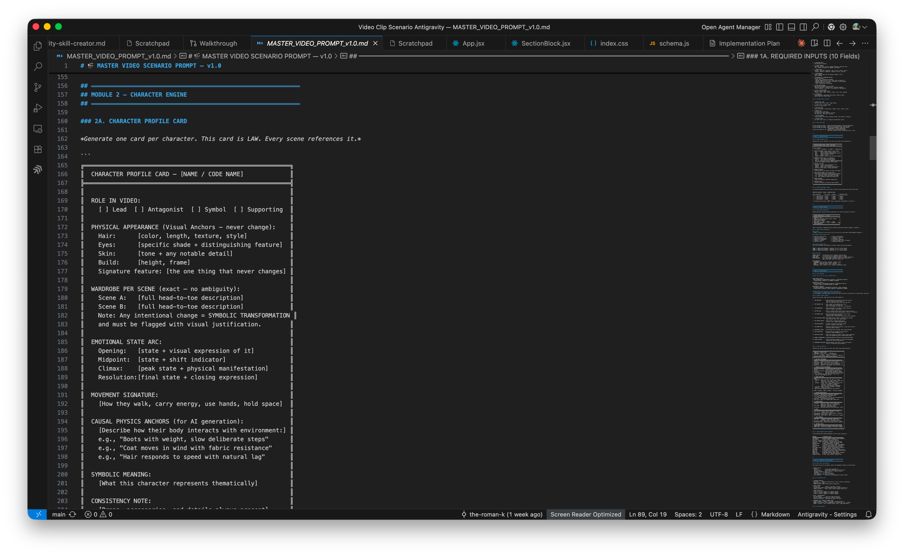
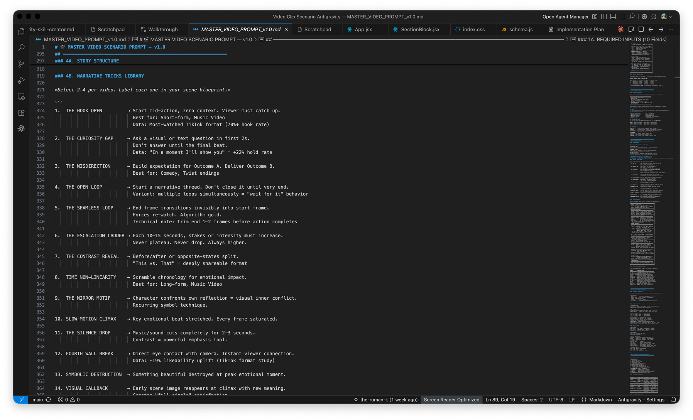
Result: Working Prototype with Measurable System
I shipped a fully functional prototype that demonstrates the concept. The system architecture is production-ready and extensible.
A creator who would spend 6+ hours writing individual scene prompts, managing character consistency, and optimizing for platform now receives a complete, production-ready scenario in minutes.
What the Output Enables
- Direct input to Sora, Runway, Midjourney video generation (with custom prompts per scene)
- Character consistency maintained across all scenes via Character DNA String
- Music sync and pacing guidance built into timeline
- Platform-specific optimization (aspect ratio, pacing, title options)
- Quality checklist that creators can iterate on without starting over
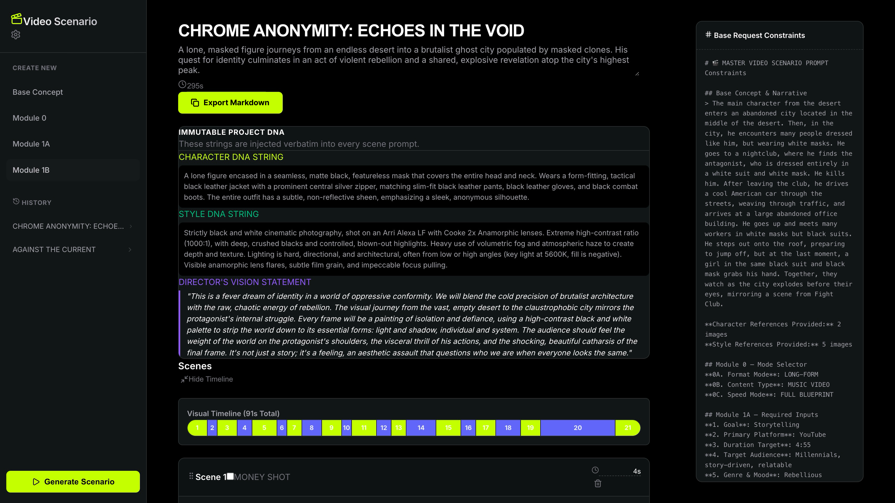
The AI Layer: How AI Shaped Every Decision
This project is not a "how I'd build this if I used AI today" case study. I actively used AI throughout, and it fundamentally shaped the system.
AI in Research
Tested four AI environments (ChatGPT, Claude, Codex, AntiGravity) head-to-head across scenario generation. This comparison became the research foundation for the entire product.
AI as Design Material
Treated Gemini API capabilities as design constraints. The 7-module architecture was shaped by what AI could reliably output. The Master Scenario Prompt is itself a design artifact — engineering how AI thinks about video.
AI in Production
Gemini API generates structured JSON outputs: Project DNA, Character DNA, Scene blueprints, optimization suggestions. The API handles narrative synthesis; the UI presents it clearly.
Evidence of AI Impact
- 4 AI environments tested: Research grounded in comparative evaluation, not guesswork
- Prompt architecture designed: The system treats prompt structure as a design artifact, not a hack
- Gemini API integration: v2 powered by generative AI, not templates
- Scene-by-scene prompt generation: Each scene receives a custom, AI-generated prompt optimized for its platform
Next Steps
This project demonstrates my approach to designing with and for AI: rigorous research, system thinking, and outcomes that matter.
Let's Talk About Your Project